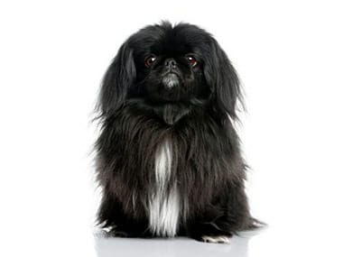
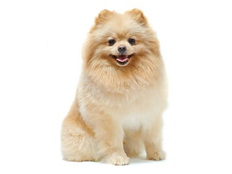

Nežan i neustrašiv, malteški pas ili drugačije nazvan maltezer (engl. Maltese),
će svakoga koga sretne smatrati prijateljem. Njegovo glamurozno belo krzno
daje mu izgled značajnog plemića, ali izgled može varati. Ovo je živahan i
energičan pas koji nije samo dobar kao porodični saputnik, već i u takmičenjima
agilnosti,poslušnosti, praćenja, pa čak i kao terapeutski pas. Iako izgledaju
aristokratski i elegantno, izuzetno su živahni. Veoma brzo uče, ukoliko ih
nagradite za njihove napore. Usled povezanosti sa ljudima, dobro reaguju na pozitivne
metode obuke kao što su pohvale, poslastice, nagrade… Pošto imaju dugačku istoriju kao
porodični pratioci zahtevaju puno ljudske pažnje i mogu jako patiti od anksioznosti
usled razdvajanja. Ukoliko ih na duži vremenski period ostavljate svakodnevno same
jer počeće da laju i biće destruktivni.

Pekinezeri su drevna rasa psa nastala u Kini pre više vekova. Lavljeg dražanja, kompaktne građe i raskošne guste dlake.
Odlučan, samouveren, živahan i hrabar. Ovaj pas, koga su nazivali lavlji pas ili pas sunce bio je izuzetno cenjen pratilac
na kineskom dvoru.Pametan, samouveren i svojeglav. Ovaj mali pas sa stavom uživa da se šepuri i privlači pažnju. Mnogi znaju
biti veoma posesivni, a kod nekih pasa zaštitnički instikt nekada može prerasti i u agresivnost. Duga i prava sa obiljem grive
koja se produžava preko ramena obrazujući pelerinu ili okovratnik tj volane oko vrata. Podlaka je veoma gusta. Dlaka na ušima,
nogama, butinama, repu i prstima je je paperijasta o veoma obilna. Dopuštene su sve boje osim crvenkasto smeđe i bele.

Reč je o psu tipa špic, koji je dobio ime po regionu Pomeranija koji je nekada pripadao Nemačkoj, a danas najvećim
delom pripada Poljskoj. Potomak je i blizak rođak krupnijeg nemačkog špica, a u nekim zemljama poznat je kao patuljasti špic.
Današnji pomeranci imaju između 2 i 3,5 kilograma, a visoki su do 28 cm. Imaju prepoznatljivo pufnasto, debelo krzno, koje
može biti u čitavom spektru boja. Britanska kraljica imala je riđeg, a danas su najčešći narandžasti, crni ili krembeli.
Nega dlake nije teška, ali trebalo bi ih češljati svakog dana da se održi kvalitet krzna, ali i zbog toga što je reč o psima
koji se puno linjaju. Treba ih šišati najmanje jednom u dva meseca. Pomeranci su obični veoma prijateljski raspoloženi, razigrani
i živahni, ali često agresivni prema drugim psima pred kojima nastoje da se dokažu.Generalno su vrlo inteligentni, lako se obučavaju.